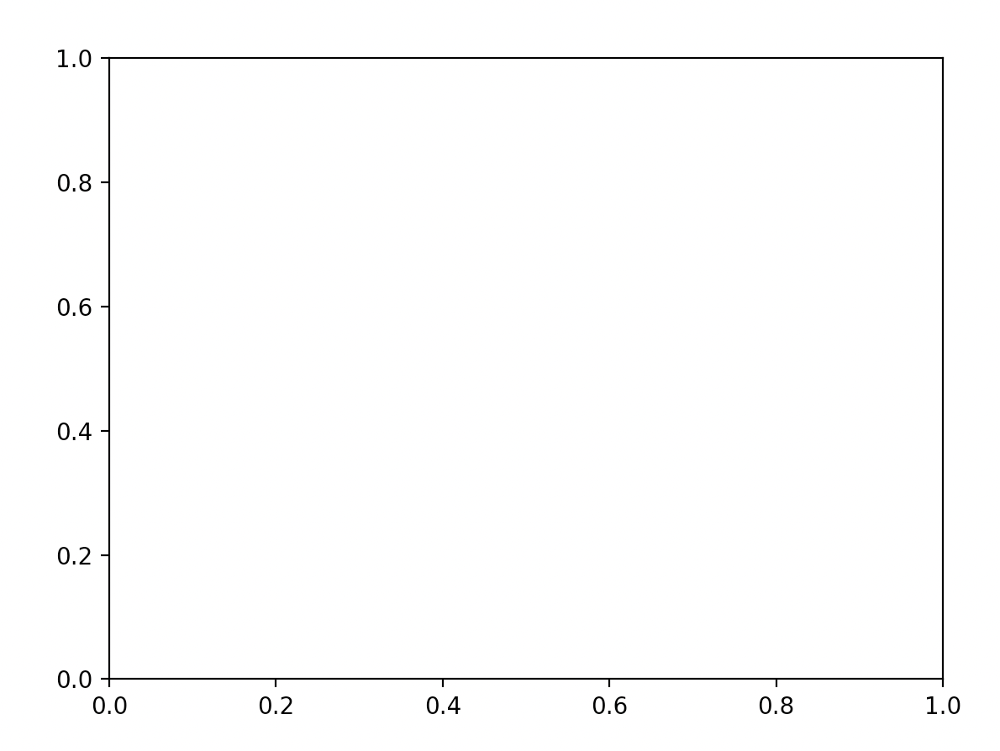
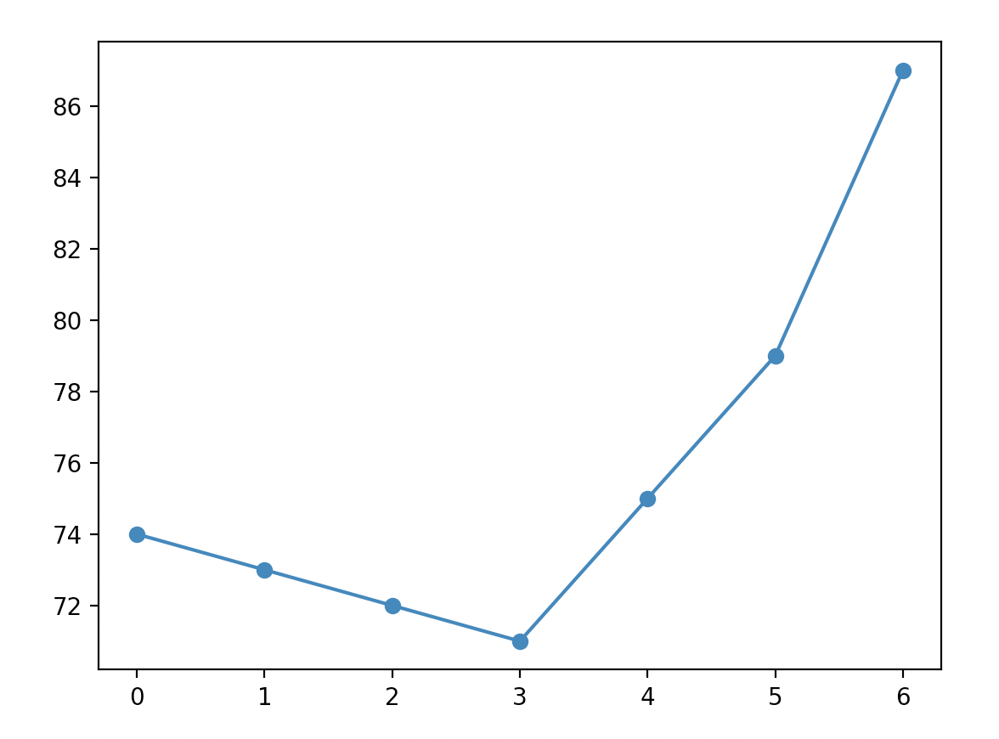
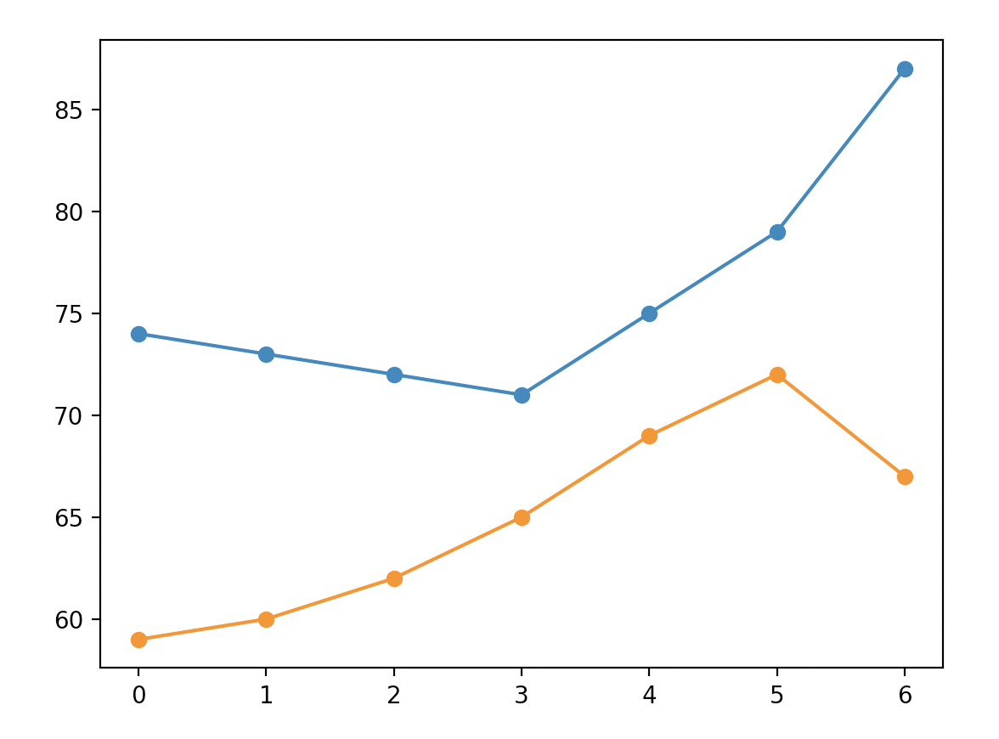
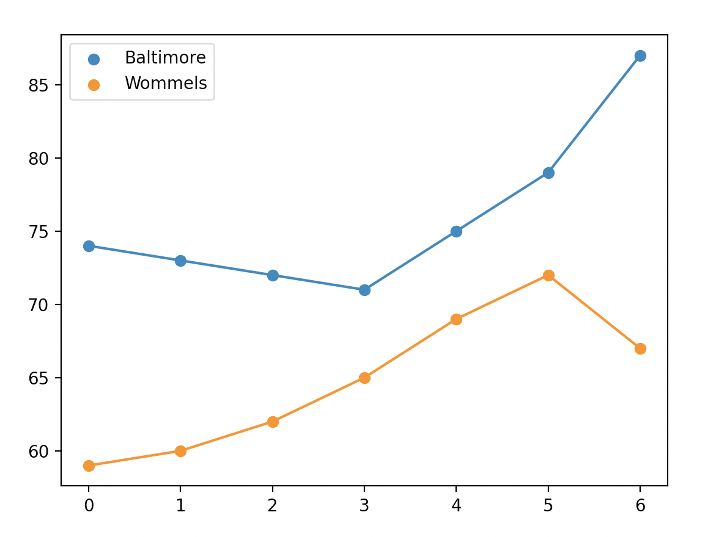
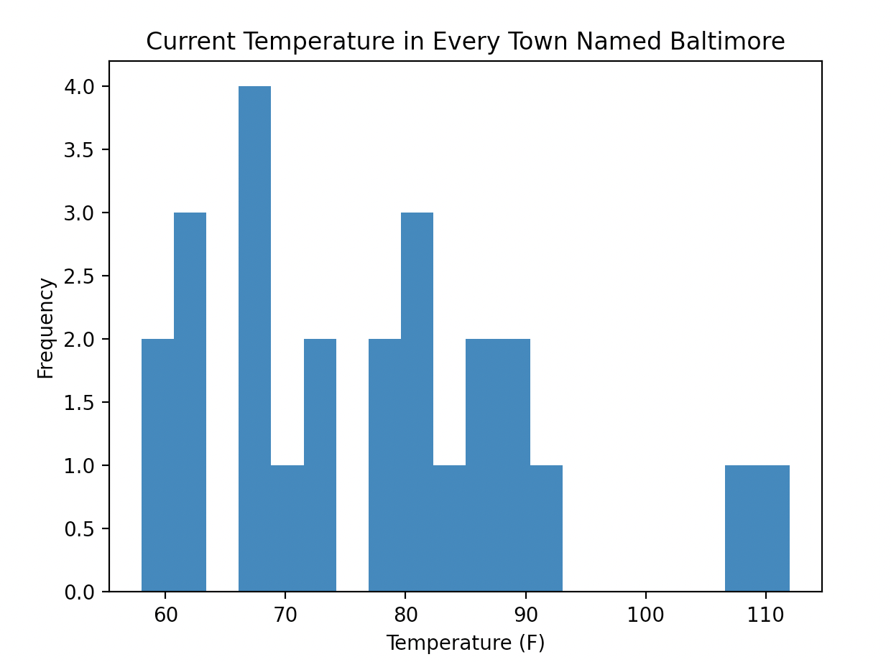

4.13 Plotting with matplotlib
In this course, we will use the library Matplotlib for plotting. For concision, we will import the matplotlib.pyplot module with the name plt, as such:
import matplotlib.pyplot as plt4.13.1 Line and Scatter Plots - Walkthrough
We can initialize a figure with the following line:
fig, ax = plt.subplots()This initializes a figure (named fig) and a plot within the figure (named ax). Having separate variables for the figure and the plot within the figure may seem strange, but it will make it considerably easier to arrange and manipulate multiple subplots within a larger figure. At present, our figure is just am empty canvas:

4.13.1.1 Points and Lines
Let’s add to our subplot by plotting some data. I’ve stored the temperature in Fahrenheit in Baltimore, MD and Wommels, Netherlands for the next seven hours:
hours = range(7)
tempBaltimore = [74, 73, 72, 71, 75, 79, 87]
tempWommels = [59, 60, 62, 65, 69, 72, 67]To plot a set of points, we can use the .scatter() method This function takes two mandatory arguments: a list of x coordinates and a list of y coordinates. We can plot the temperature in Baltimore as such:
ax.scatter(hours, tempBaltimore)We can display our plot by running the function plt.show(). Our plot will look like this:

Note that the .scatter() method has a variety of optional arguments that can be used to configure the appearance of your pointts - we will often modify the color (c), size (s), and shape (m) of our points. A full list of options can be found here.
To add a line, we use the .plot() method. Like .scatter(), this function takes as arguments lists of x and y positions, and allows for aesthetic customization with a variety of optional parameters. (for more information on those, look here) our plotting code now looks like this:
import matplotlib.pyplot as plt
hours = range(7)
tempBaltimore = [74, 73, 72, 71, 75, 79, 87]
tempWommels = [59, 60, 62, 65, 69, 72, 67]
fig, ax = plt.subplots()
ax.scatter(hours, tempBaltimore)
ax.plot(hours, tempBaltimore)
plt.show()and generates this image:

4.13.1.2 Multiple Sets of Data
To plot both Baltimore and Wommels, we simply add a second call to .scatter() and .plot()
fig, ax = plt.subplots()
ax.scatter(hours, tempBaltimore)
ax.plot(hours, tempBaltimore)
ax.scatter(hours, tempWommels)
ax.plot(hours, tempWommels)
plt.show()
A couple things are interesting about this plot:
- The y axis scale adjust automatically to fit in Wommels.
- The second time that we call the
.scatter()and.plot()functions, they automatically plot in a new color. If we were to add a third set of points, they would again be in a new color.
4.13.1.3 Labels and Legends
To an observe, our plot is a bit confusing because it is unclear which line represents Wommels and which line represents Baltimore. We could clarify this by adding a legend. There are two steps to doing this:
- We need to use the optional
labelargument. This argument lets the interpreter how to label a line or set of points in the legend. For example, we can label a set of points as such:ax.scatter(hours, tempBaltimore, label='Baltimore'). In this example, we can label either the scatter plots or the line plots. - Create a legend using the
.legend()method
fig, ax = plt.subplots()
ax.scatter(hours, tempBaltimore, label='Baltimore')
ax.plot(hours, tempBaltimore)
ax.scatter(hours, tempWommels, label='Wommels')
ax.plot(hours, tempWommels)
ax.legend()
plt.show()
4.13.1.4 Figure Aesthetics
Now that our data is plotted, let’s add some axis labels using the .set_xlabel() and .set_ylabel() methods:
ax.set_xlabel("Time (Hours)")
ax.set_ylabel("Temperature (F)")We can set a title as such:
ax.set_title('Temperature in Baltimore and Wommels')If we wanted to set custom limits for our x and ylimits, we can use the set_xlim() and set_ylim() methods:
ax.set_ylim(50, 100)Altogether, our final image looks like this:

4.13.2 Histograms
Histograms are a convenient way of visually displaying the overall distribution of a one-dimensional dataset.
I’ve found 25 towns worldwide named Baltimore. Here are their current temperature in Fahrenheit saved to a list:
temperatureBaltimore = [69, 83, 82, 90, 77, 89, 82, 67, 59, 86, 74, 77, 58, 67, 62, 91, 73, 81, 67, 87, 61, 67, 61, 108, 112]To generate a histogram, we use the .hist() method. By default, this method takes just one argument - the data that you wish to plot.
fig, ax = plt.subplots()
ax.hist(temperatureBaltimore)
ax.set_xlabel('Temperature (F)')
ax.set_ylabel('Frequency')
ax.set_title('Current Temperature in Every Town Named Baltimore')
plt.show()
One important argument for the .hist() method is bins, which allows us to set how many groups our data is divided into. The more bins there are, the fewer x values will be contained within a single bin. For example, plotting the Baltimore data with a larger number of bins:
ax.hist(temperatureBaltimore, bins = 20)